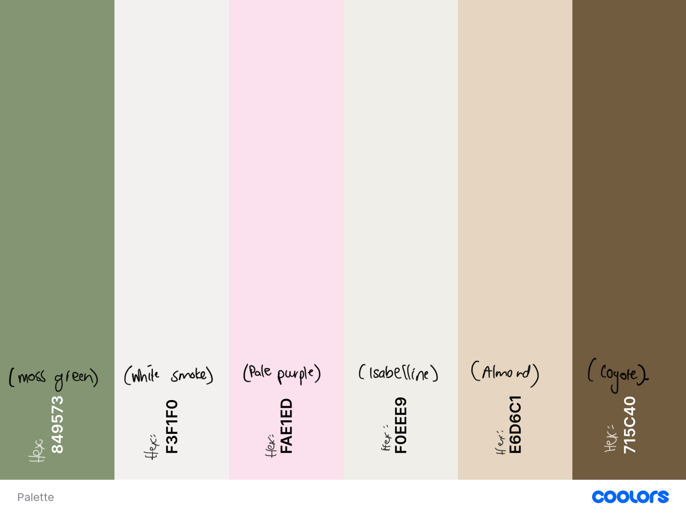
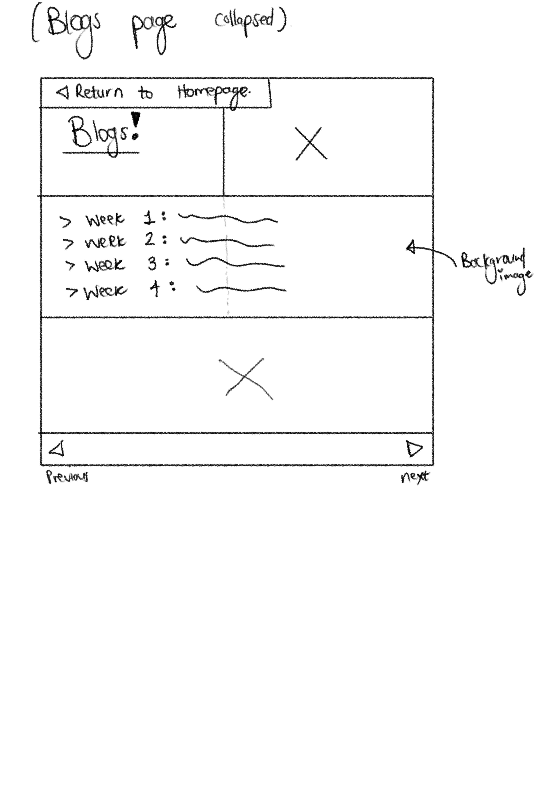
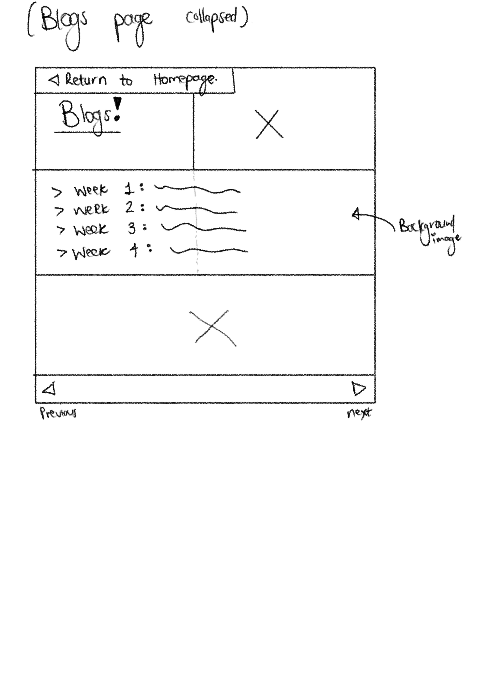

Uh oh, the idea has evolved...
Introducing: Webpage Idea Version 1.2
As the title suggests, the idea I have more my website has changed. As a designer and someone with many hobbies, interests and creative outlets, I would want users to be able to see this from their first interaction with the website. My peers have inspired me. As such, the homely, apartment style web page idea I had previously has to change.
My strengths are in video editing and I would like for this to extend into content creation as much as it does for content consumption. Platforms that I consume contentn on include YouTube and Netflix. These will be the new websites I use for inspiration going forward.
The core values remain the same, I want it to feel clean, well curated and that you, the user, come to feel familiar, welcomed and "at home" on my page as well as with me as a designer. I cant wait for you to see how things will change, and be further expressed going forward!
Idea Version 1
Documentation of My IxD (Interaction Design) process:
Interaction design focuses on making user experiences intuitive and easy. My process began by identifying the
emotions and reactions I want users to feel when interacting with my website. I want them to feel like they’ve entered a
space that’s warm and familiar—almost like visiting a friend’s house. The experience should feel seamless and effortless,
so I prioritized simplicity in navigation and interaction.
I started with research into current design trends, particularly those that align with minimalism and a welcoming aesthetic.
I looked at user personas to help me map out the different types of people who would interact with the site: my peers, lecturers, and graduate
recruiters, and anyone interested in early website development. By understanding their needs, I was able to tailor the site’s flow, content,
and style to create an intuitive experience.
From there, I sketched wireframes using simple apps on my iPad such as Notebook and Freeform. I must admit, they do need some refining
and user input to ensure that the website I end up designing is free from confusion and has clear usability.
Goal Alignment:
My primary goals for the website are:
- Usability: Ensure every user can easily navigate through the pages.
- Flow: Create a smooth transition between pages that guides the user effortlessly from one point to the next.
- Personalization: Leave users with a sense of having met me and explored my academic and professional journey.
To achieve these goals, I focus on keeping the interface clean, the language conversational, and the overall design cohesive.
Information Structure - Content Mapping:
The website’s content structure is organized around key areas of my academic journey and professional interests. Each page serves a purpose:
My content flow is structured to guide users logically while ensuring smooth navigation.
User Flow - Screens, Behaviour, and Decisions:
The user flow ensures an intuitive experience:
- Starting at the Homepage: Users are greeted with a friendly introduction.
- Navigation: Every page includes a button to return to the homepage.
- Content Exploration: Users are encouraged to explore further with related content links.
- Decisions: Users can choose to engage with blog posts, essays, design work, or portfolio pieces.
See a cute user flow diagram here
List and Explanation of Selected Interface Elements:
Key interface elements include:
- Navigation Bar: A fixed menu on the homepage for easy access.
- Buttons: Clear, interactive buttons for seamless navigation.
- Images: Relevant images to enhance engagement.
- Links: Contrasting color links with hover effects.
- Footer: A minimal footer with social media links, contact info or copyrighted tags.
Style Process Documentation:
The website's design is a balance of fun, personality, and professionalism.
Typography - Readability and Personality:
Headings: Bubble-like font for a playful feel.
Essays: Times New Roman for a structured, academic tone.
Body Text: Sans-serif for readability.
Composition - Balance, Hierarchy, and Flow:
Strong Visual Hierarchy: Headings stand out for easy scanning.
Whitespace: Strategic spacing for readability.
Sectional Design: Clearly defined sections for intuitive navigation.
Interface Elements - Visual Representation and Usability:
Navigation Bar: Fixed and simple for ease of use.
Buttons: Rounded with soft hover effects.
Dropdown for Weekly Blogs: Keeps posts organized and accessible.
Return-to-Home Button: Top-right placement for convenience.
Colour and Visual Aesthetic:
Colour Palette:

My color palette is designed to create a warm, inviting digital space.
- Moss Green: A grounding, calm base color.
- White Smoke: A neutral backdrop for readability.
- Almond: Warmth and coziness for a welcoming feel.
- Pale Purple: A subtle touch of creativity.
- Isabelline: A balanced, neutral shade.
- Coyote: A soft contrast for depth.
- Sage Green (Potential Addition): Enhances the natural aesthetic.
Primary colour palette:
Moss Green: This earthy tone serves as the foundation of the website, symbolizing growth, balance, and calm. It creates a sense of stability and is easy on the eyes, making it perfect for larger background areas or sections that need a sense of depth.
White Smoke: As a soft, off-white shade, it provides a neutral, clean backdrop that allows the other colours to pop without overwhelming the content. It enhances readability and makes the design feel airy and fresh, giving users a sense of openness.
Almond: A cozy, beige-toned colour, almond adds a touch of warmth and comfort to the site. It’s ideal for background elements or sections where I want users to feel relaxed and at ease, reinforcing the home-like feel I aim to create.
Secondary colour palette:
Pale Purple (Pink): A gentle and creative tone, this colour is used sparingly to introduce warmth and a sense of nurturing. It helps highlight important elements, such as headings or buttons, and evokes a feeling of creativity and calm. The soft nature of this pink adds a touch of personality without being too bold.
Isabelline: This warm, neutral shade of yellowish-tan provides balance and harmony. It complements both the moss green and white smoke, acting as a bridge between the more vibrant hues. Isabelline brings a calm, natural feel to the website, contributing to the overall serenity of the space.
Coyote: This muted brownish-grey brings depth and reliability to the palette. It pairs well with the other earthy tones, providing a sense of grounding and security. Used for text or buttons, coyote adds a subtle contrast while maintaining the overall warmth of the design.
Sage Green: As a potential addition to the secondary palette, sage green would enhance the natural and calming vibe of the site. It pairs beautifully with moss green, reinforcing the theme of growth and tranquility. It could be used to accentuate key design elements like navigation buttons or section headings, adding a fresh, refreshing pop without being overpowering.
Sketches and UI Overview:
I experimented with multiple homepage layouts and content structures:
- Portfolio Grid: A structured display for projects.
- Single-Column Blog Layout: Focused on readability.
- Basic UI Elements: A navigation bar, central content, and footer.
The final aesthetic balances minimalism with warmth, making users feel at home.
 
